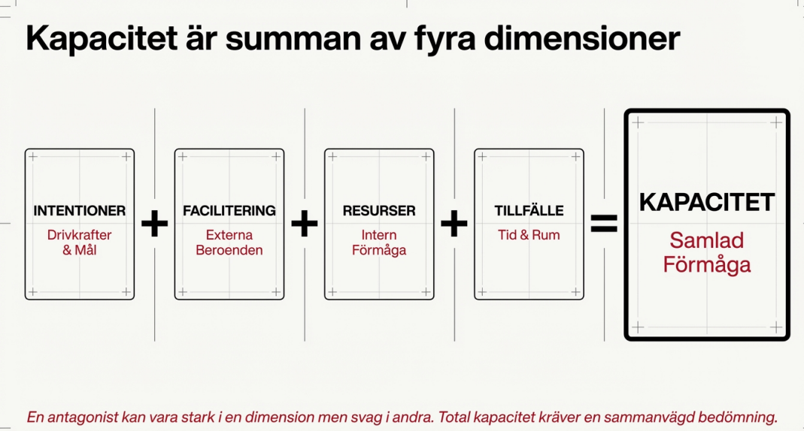

1) Modell
Kapacitet = fyra dimensioner
Översikt

Snabb sammanfattning av modellen. Använd som startslide innan ni går ner i dimensionerna.
Undervisning
Antagonistisk kapacitet beskriver den samlade förmågan hos en aktör att omsätta vilja till handling. Kapacitet uppstår inte ur en enskild egenskap, utan genom samspelet mellan fyra dimensioner: intentioner, facilitering, resurser och tillfälle.
En aktör kan vara stark i en dimension men svag i andra. Hög total kapacitet kräver att alla fyra dimensioner samtidigt är tillräckligt utvecklade. Det är därför analysen alltid ska vara sammanvägd, spårbar och möjlig att uppdatera över tid.
Nyckelpoänger
- Kapacitet är ett system (samverkan), inte en enstaka indikator.
- Styrkan i en dimension kan kompenseras – men bara till en viss gräns.
- Kapacitet förändras: uppbyggnad, tillfälliga förstärkningar och plötsliga bortfall.
Övningsfrågor
- Ge ett exempel på en aktör med hög intention men låg kapacitet – varför?
- Vilken dimension är oftast svårast att observera tidigt i en hotutveckling?